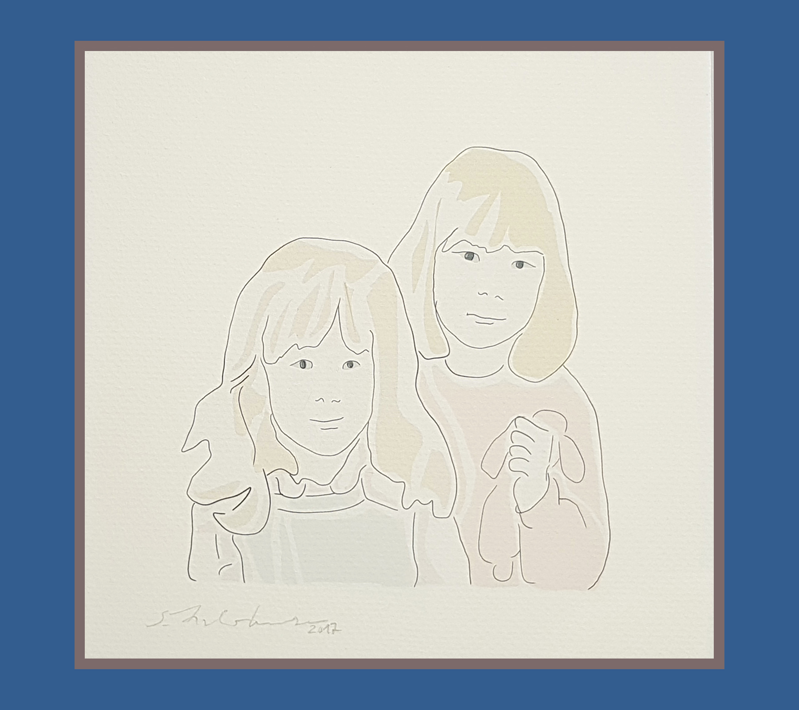
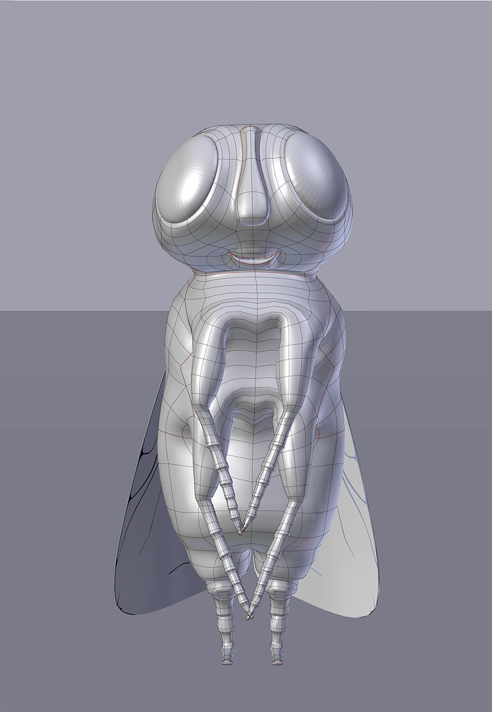
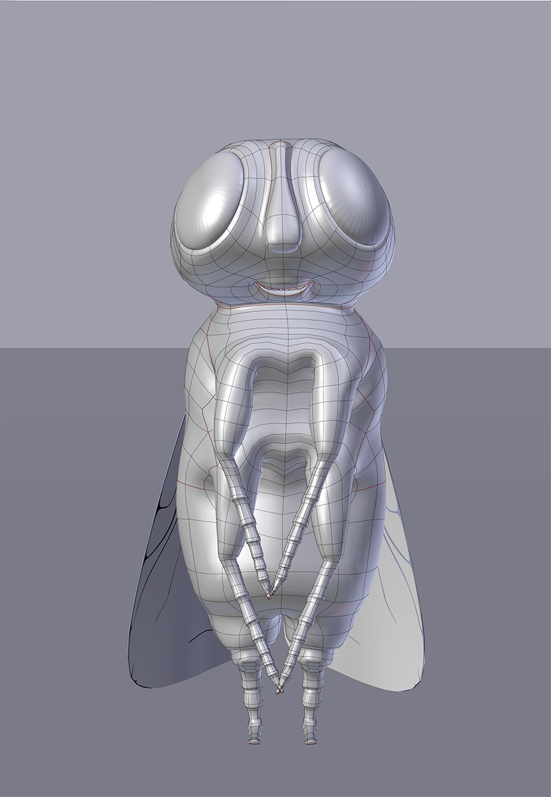
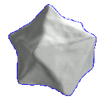
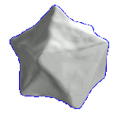

3D Graphics – Illustration & Animation
3D Characters and Sceneries
Work in Progress – Character Modeling, Rigging and Animation

Entry for the pictoplasma "CharacterStareDown" contest
Testing the Auto-Rigging and Skinning system BlenRig, which works with a combination of Mesh Deform and Armature Modifier.
Blender Grease Pencil Drawing

Drawing of my sister and me when we were around nine and five. Done with Blender's Grease Pencil and printed on Hahnemühle Fine Art Paper
Christmas Greeting Card 2017
Sculpted a cat and rigged it with the Rigify Cat Rig. Rendered with Blender Internal and FreeStyle.
Seek and Find - VR Environment
My first Blender VR Rendering: Seek and Find VR Quiz "Find the Bananas". To be read as a homage to Andy Warhol's exhibition at Stable Gallery 1964 and to be looked at with the awesome VRAIS app by blendFX and Mikavaa
Work in Progress – Character Animation
First steps into Character Animation

Season’s Greetings
The fly family enjoys Christmas, too. Christmas Greeting Card 2015 rendered with Cycles.
 

Blender FreeStyle Studies
Some 3D Sceneries rendered with Blender Internal / FreeStyle and printed on Hahnemühle Fine Art Paper


chicken animation with the great chicken model and rig from Nimble Collective

Elli Kuruş

Within the artist collective Elli Kuruş, we survey the structure of the platonic bodies, their inherent historical notion and their media presentation. The platonic bodies embody an ideal of harmonic order and logic and are easy and popular to create in 3D programs. With the question of human imperfection in relation to geometric, algorithmic and mathematical perfection in mind we modeled the platonic bodies by hand without any facilities. Then we scanned the models with the 3D scanner and edited the data with Blender to set the digital hand-formed sculptures into new contexts. The 3D scans of hand-formed sculptures relate to the history of platonic bodies and transform their mathematical beauty, their claim to represent world through reduction and logic.

 

platonic bodies
virtual installation, 2015, Galerie ARTACKER, Berlin together with Elli Kuruş.

Monticello
Model of Thomas Jefferson‘s mansion Monticello, created for the exhibition »Invisible Hand, The Great Book of…« by Elli Kuruş, at Galerija Miroslav Kraljević, Zagreb, Croatia 2016.
video loop

The exhibition shows a multimedia installation consisting of a serving cart, 2 dollar bill, plasticine, Californian red wine, Ethernet cables, cable pulleys, video, ink drawings on paper, frames, fake fingernails, plastiform, artist book. »Invisible Hand, The Great Book of…« unearths and exposes forgotten and forgettable images of labour through a series of digital excavations and transformations. Installation arrangements hint at the presence of algorithmic and mechanical machines distributing visibility through selective reproduction and explicit deletion. The exhibition thus points to the deleted ‘other’ of contemporary and historical practices of constructing the visible. Continuous re-accentuation of the Deleted produces the eerie effect of a mundane transgression, of witnessing the representation of the unrepresented. Suffused with speculation and commentary, technical drawings and architectural models invite viewers’ eyes to rest within the comforting space of invention, marked by oversight and omission. The 18th century plantation Monticello is resurrected within the digital realm, hinting at the dubious possibility of a historical continuity of a war on the perceptibility of labour. Digital network technology enters into a material communion with vintage service carts and financial signifiers. These juxtapositions of historical and digital materials seduce and irritate the beholder, until contemporary practices of seeing and unseeing emerge in their historical specificity. Under the newly sceptical gaze, existing visual regiments are destabilized, offering a glimpse at the possibility of alternative systems of distributing and reassembling the visible.

Artistic and conceptual research by 3D modelling:
During the process of creation and modelling we realized that
also in today’s visual representation of Monticello, the architectural parts where slave labour took place are mostly
neglected. So we decided to show the model of the whole Monticello and present an unusual view of the building, which
renders the huge basement and dependencies system visible that Monticello is based on.


Thinking through animation
In the course of the ICSC-INTERCITY/SWITCHCITY exchange project (2015–2017) the involved artist collectives also discussed and worked on opportunities, new ways, and borders of collectivity in the artistic workflow. Here some thinking through animation regarding the question: “How to handle ‘agonistic pluralism’ (Chantal Mouffe) in ‘collective’ (artistic) production/projects and how to come to decisions (isn't that a contradiction in itself?) ?”

Referring to the animation: Isn’t that one of the problem with typical endless, often boring collective discussions, which most of the time leads to everyone’s exhaustion? What about many pink balls that appear together (Jean-Luc Nancy) without the need to be played together but at the same time influence each other just by being there?
welcome to my room – St. Gertrude’s Church
Hours: Thu–Sun 1pm–6pm from March 11 thru April 7, 2017.
Vernissage: March 10, 7pm.
Finissage (closing ceremony): April 7, 7pm.
Event page on Facebook
Developing an artistic work by using the 3D model of the exhibition space.
Work in Progress for an exhibition in St. Gertrude’s church, Cologne, together with four artists from Cologne, Paris, and Leipzig.
St. Gertrude is known for its extraordinary architecture by Gottfried Böhm, so thinking of an artwork in this outstanding building is quite a special challenge. Besides the religious aspect one can hardly ignore the site-specific influence of the architecture itself. So we decided to work extensively on the architecture and its structure. We started with an artistic 3D analysis and figured out which directions the work(s) could take.


In this process, working with Blender has at least two strong features. On the one hand it obviously helps to imagine the dimensions of the building and any artwork inside of it, on the other hand Blender works as a tool to think and to start the creative process. By modelling the church, a deeper understanding of its structure emerges, which is the precondition for a diverse artistic practice. The myriad opportunities of the 3D model evoke thinking in a broader sense. Grabbing, rotating, moving the elements or changing their material opens up the mind to new views. So Blender cannot just be seen as a tool to visualize but to think and create new artistic approaches. The exhibition takes place in March and April, 2017.

GRASSI Museum
Concept of an exhibition design for the GRASSI Museum of Applied Arts in response to an open call for proposals in 2014. The emphasis of the requirements was on designing the entrance hall particularly for families and kids. The jury looked for concepts that let the visitors tune into the mood of the museum, connect them with the content of the exhibition, and arouse their curiosity.
video proposal of the exhibition design „GRASSI for kids“

Unionsverlag
Around the World in 40 Years – Exhibition Planning and Design for Unionsverlag in the Leipzig House of Books Foyer
The exhibition sheds a light on the history of a publisher that has been a home to authors from all continents for 40 years. A publisher that has been crossing frontiers from the outset. Documents, photographs and other book production paraphernalia give unique insights to the inner workings of a publisher throughout the decades.
Groundwork
- Parameters
- Haus des Buches Leipzig, 180 sq.m. exhibition space in the foyer, accessible by the public, adjacent to a café operated by Haus des Buches
- Exhibition dates: March/April 2015; Hours: Mo.–Thu. 9 am to 5 pm , Fr 9 am to 3 pm


existing furnishings, arrangement options and preconditions: Glass cases and partitions, hooks and mountings, frames, ceiling tracks
The elevator for the disabled and the doors to the inner yard must not be blocked. The pillars should remain untouched.
Planning phase 1 – poster boards and glass cases


Planning phase 2 – Designing and positioning other elements


Planning phase 3 – Adapting the elements to changes in concepts and to technical boundary conditions


Implementation